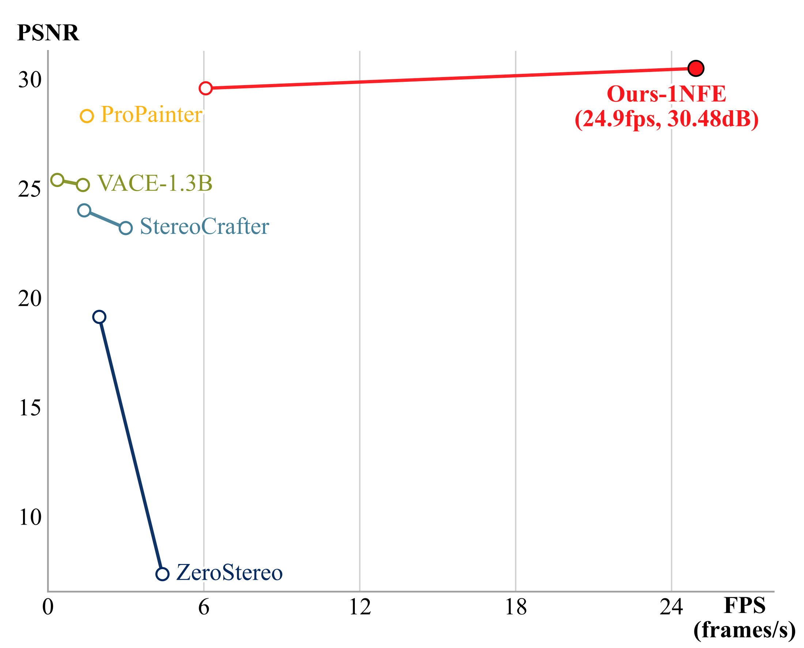
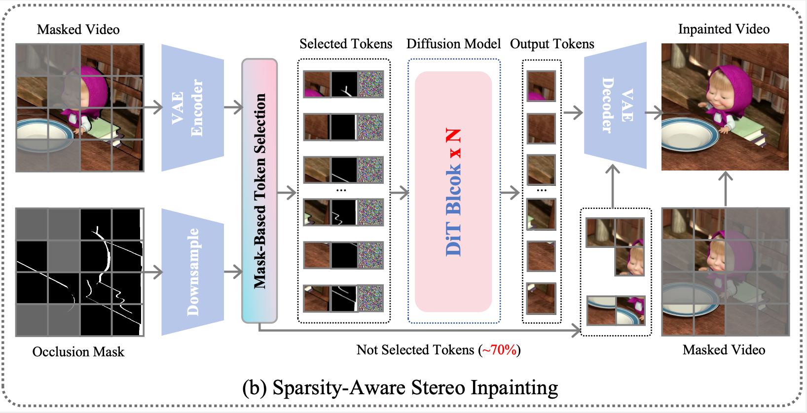
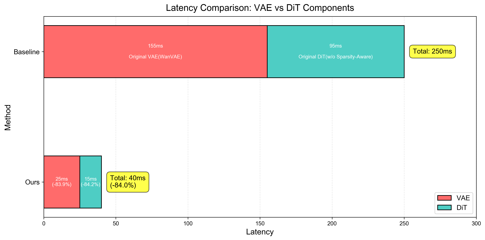
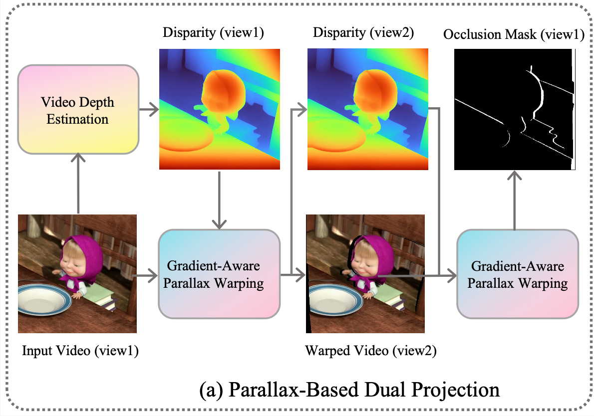

Abstract
Task. Mono-to-stereo video conversion via stereo inpainting, filling occlusions while maintaining geometric consistency and temporal coherence.
Method. DreamStereo enables real-time HD stereo inpainting through three key innovations:
- GAPW, gradient-aware backward warping for clean occlusion boundaries
- PBDP, pseudo-binocular data pipeline generating training pairs from monocular videos
- SASI, sparse attention inference achieving 6× DiT speedup
Performance. 768×1280@25FPS on A100 (40ms), 54ms on RTX 3090, 33ms on RTX 4090. First real-time HD stereo inpainting system.

Real-Time
Why it runs in real time

- SASI prunes 70%+ redundant tokens during inference.

- Distilled VAE for accelerated codec.
- NFE=1 inference for real-time throughput.
Data Construction

- GAPW: backward warping + gradient-based occlusion masks for clean boundaries.
- PBDP: dual projection to build pseudo-stereo pairs/masks from monocular videos.
Comparison Data
| Data Construction Method | PSNR ↑ | SSIM ↑ | LPIPS ↓ |
|---|---|---|---|
| Random Mask | 26.64 | 0.906 | 0.092 |
| TrajectoryCrafter (Forward Splating) | 31.14 | 0.923 | 0.047 |
| Ours (PBDP) | 32.48 | 0.933 | 0.049 |
Comparison of Stereo Inpainting
BibTeX
Cite:
@inproceedings{Huang2026DreamStereo,
title = {DreamStereo: Towards Real-Time Stereo Inpainting for HD Videos},
author = {Huang, Yuan and Zhao, Sijie and Cheng, Jing and Xu, Hao and Jiao, Shaohui},
booktitle = {Proceedings of the IEEE/CVF Conference on Computer Vision and Pattern Recognition (CVPR)},
year = {2026}
}
Tip: add arXiv id / pages / DOI for the camera-ready version.